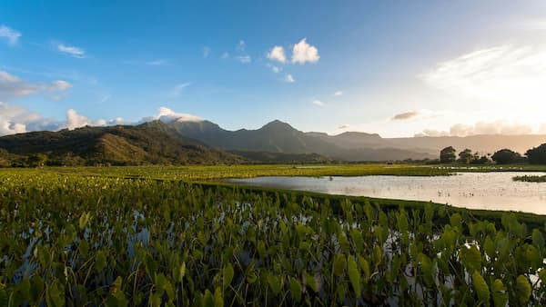
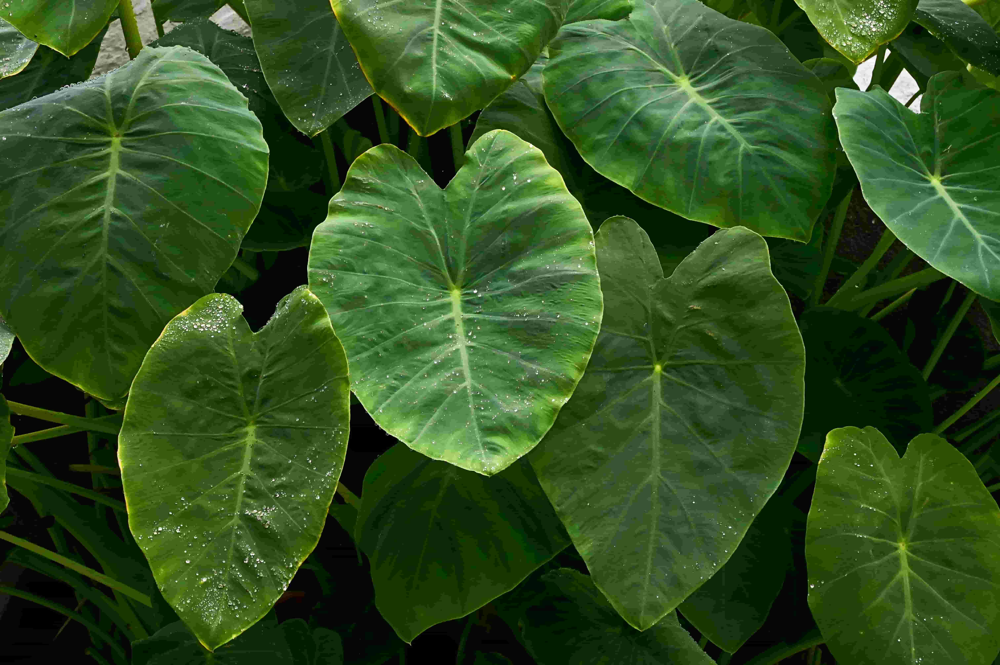

Discover the Sacred Plant of Hawaiʻi
E komo mai! Welcome to Kalo: Heart of Hawaiʻi, an informational resource exploring the cultural, historical, and environmental significance of kalo (taro) in Hawaiʻi. This site was created to provide accessible educational materials and volunteer opportunities with the hope that we can all help mālama (care for) this sacred plant and ensure that traditional knowledge continues to be passed down through generations.
For thousands of years, kalo nourished Hawaiian families and served as the foundational food staple of the islands. It was central to the Hawaiian diet, but its importance extends beyond just food; kalo represents the profound connection between people and the ʻāina (land). This relationship is rooted in the moʻolelo (story) of Hāloa, the first Hawaiian who became the first kalo plant upon his death, making kalo the elder sibling of the Hawaiian people. It establishes the kuleana (responsibility) of taking care of the land like an elder sibling so that in return, the land will take care of you.
Despite this deep cultural significance, many visitors to Hawaiʻi are unaware of kalo's importance, and even some residents have never had the opportunity to volunteer in a loʻi (wetland taro patch) or participate in practices that remain meaningful to Hawaiian culture. This website's goal is to raise awareness of kalo's sacredness by providing both resources and opportunities.
What You'll Learn Here

The pages on this website offer a comprehensive introduction to kalo and its significance within Hawaiian culture. The History section explores the moʻolelo of Hāloa, explaining how this plant came to be considered the elder sibling of the Hawaiian people and how it shapes cultural identity with the reciprocal relationship observed between Native Hawaiians and ʻāina. You will learn about traditional Cultivation methods in wet and dry kalo patches and how to prepare poi (baked and pounded taro) and other traditional foods. More importantly, in Resources, you'll find information about volunteer opportunities at kalo fields around Oʻahu where visitors can take what they learn and get hands-on experience working on preserving Hawaiian culture. Please feel free to reach out on the Contact page if you'd like to stay in touch with our work!